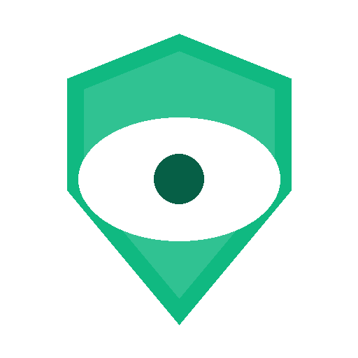
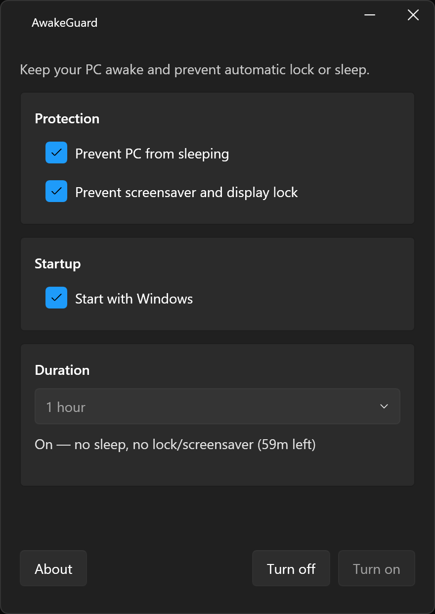
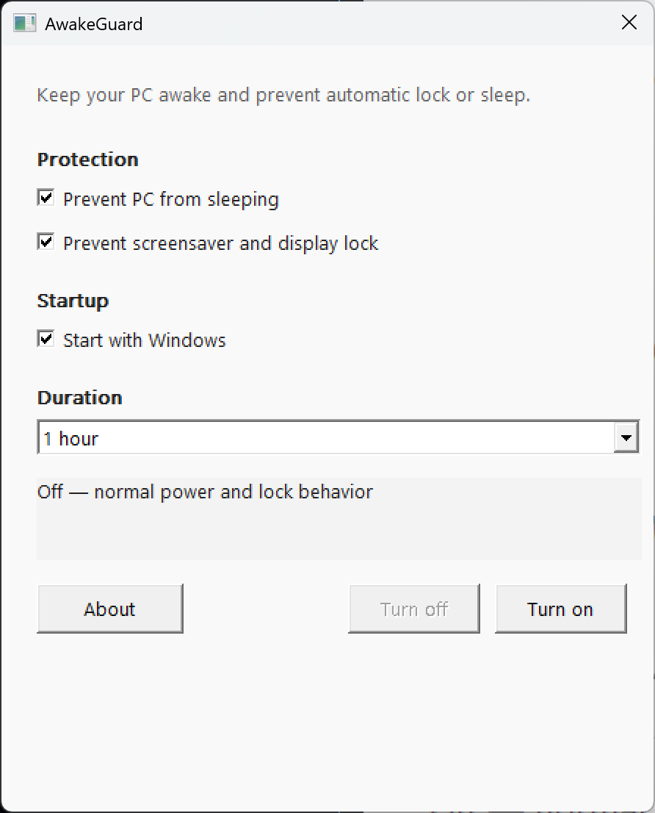

project
AwakeGuard
Keeps your PC awake for exactly as long as you need — no power plan edits required.
AwakeGuard exists because the alternatives are all wrong. Changing your power plan is too blunt — you have to remember to change it back. Third-party tools are often bloated, ad-supported, or just a little sketchy. Wiggling the mouse on a timer is undignified. There should be a small, honest utility that does one thing: keeps your screen on until you say otherwise.
It lives in the system tray and stays out of your way. Right-click, pick a duration, and your PC will not sleep, lock, or blank the screen until the time is up. No power plan modifications, no driver installs, no registry hacks — just a call to the Windows API’s SetThreadExecutionState, which is exactly what it’s there for.
There are three completely separate implementations shipped in the same repo. The WPF/Fluent build uses .NET 10, WPF-UI, and Windows’ Mica material for a modern look that fits right into Windows 11. The native Win32 build is pure C++17 with zero third-party dependencies — a single ~200 KB executable that runs on anything from Windows 7 onwards and needs no runtime installed. There’s also an XP LOL build for the truly unhinged, targeting Windows XP and later. All three are functionally identical; pick whichever suits your taste.


System tray utility
Sits quietly in the notification area. Right-click to pick a duration or cancel — nothing else on screen until you need it.
Flexible durations
30 minutes, 1 hour, 2 hours, 4 hours, 8 hours, rest of day, or indefinitely — covers everything from a quick meeting to an all-nighter.
Three implementations
WPF/Fluent with Mica UI for Windows 11 polish, a native Win32 build in pure C++ with no runtime and a ~200 KB footprint, or XP LOL for the truly unhinged.
No admin required
Installs per-user to %LocalAppData% with no elevation prompt. Uses only the Windows API — no drivers, no registry hacks.
Multi-architecture
Builds ship for x64, x86, and ARM64. The installer detects your architecture automatically and picks the right binary.
Open source
GPL-3.0 licensed. All three implementations live in the same repo — readable, auditable, and forkable.
For sane, or at least mostly sane, versions of Windows: open PowerShell and run the one-liner below. The installer detects your architecture automatically and sets AwakeGuard up per-user — no admin prompt, no reboot. Once done, it appears in your system tray and is ready to go.
irm https://raw.githubusercontent.com/KiwiGeek/AwakeGuard/master/scripts/install.ps1 | iex
Advanced installation options
Manual downloads, specific architectures, and building from source are all covered in the GitHub README.
Latest release
Browse and download the latest AwakeGuard release directly from GitHub.
Windows only — x64, x86, and ARM64. Requires Windows 10 or later for the WPF/Fluent build; the native Win32 build runs on Windows 7+.
The repo ships a third build: AwakeGuard XP LOL — a single 32-bit executable compiled with MinGW i686 targeting Windows XP SP3. It has the same tray menu and duration presets as the modern builds.
Nobody asked for this. Nobody wants this. It exists anyway. Won’t somebody think of the children?
Confirmed working on XP SP3, Vista, 7, 8, 8.1, 10, and 11.
Grab AwakeGuard-win32-x86-xp-lol.exe
The XP LOL build is included in every GitHub Release alongside the mainstream binaries.